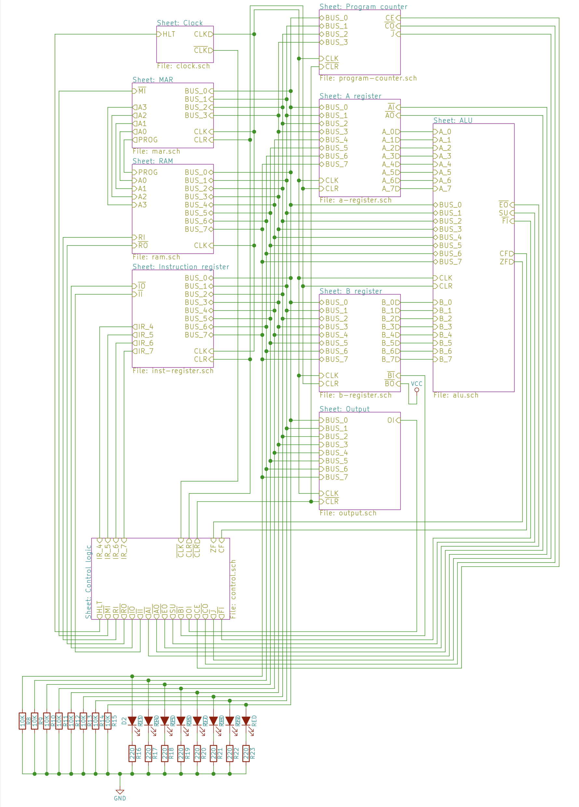
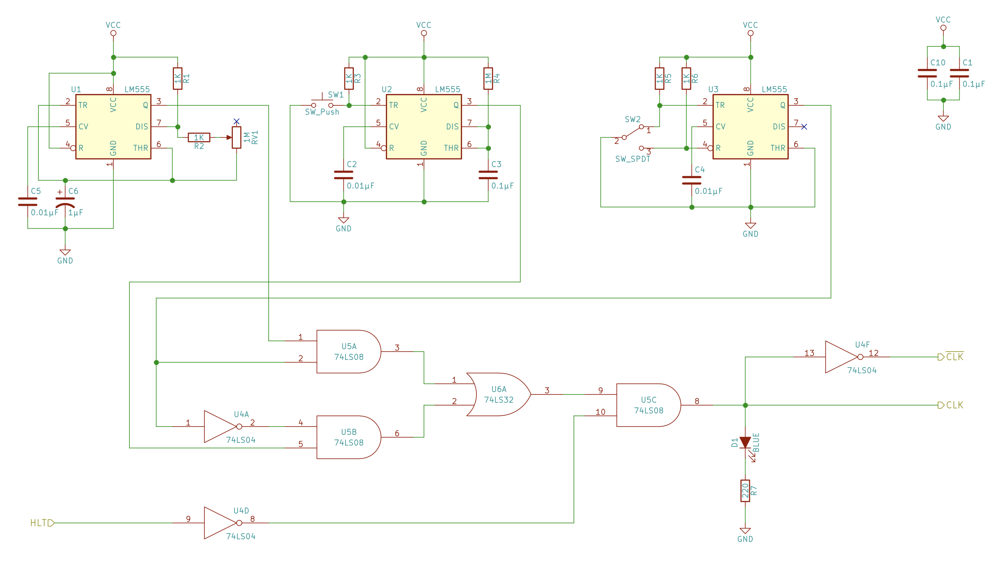
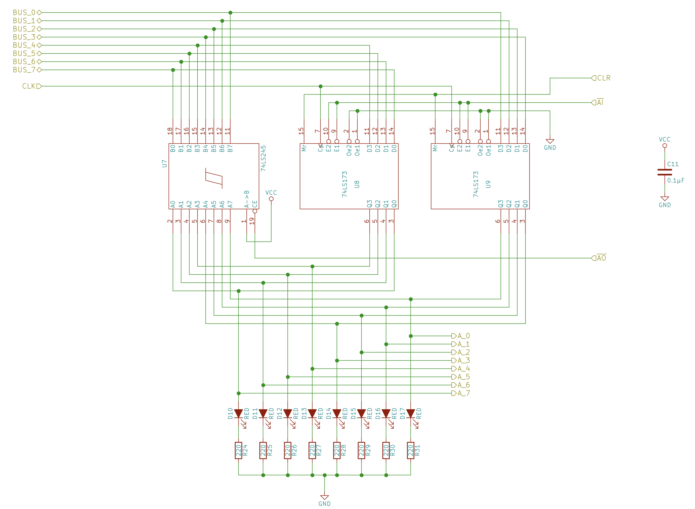
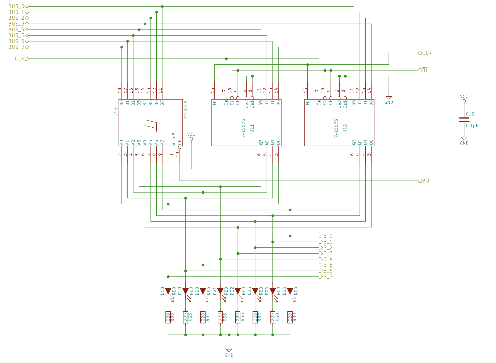
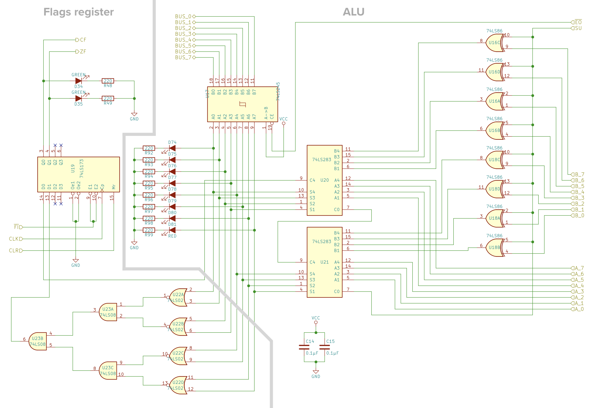
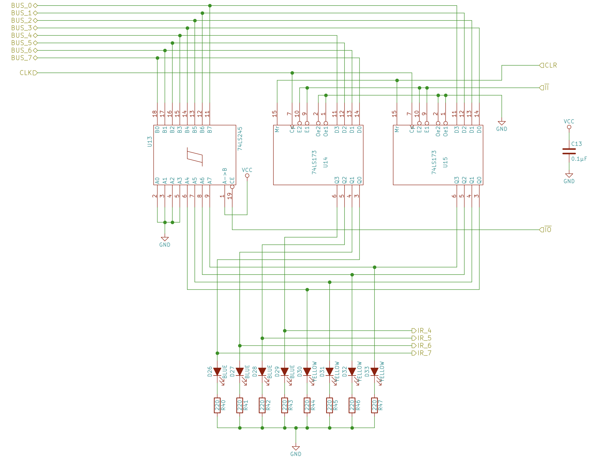
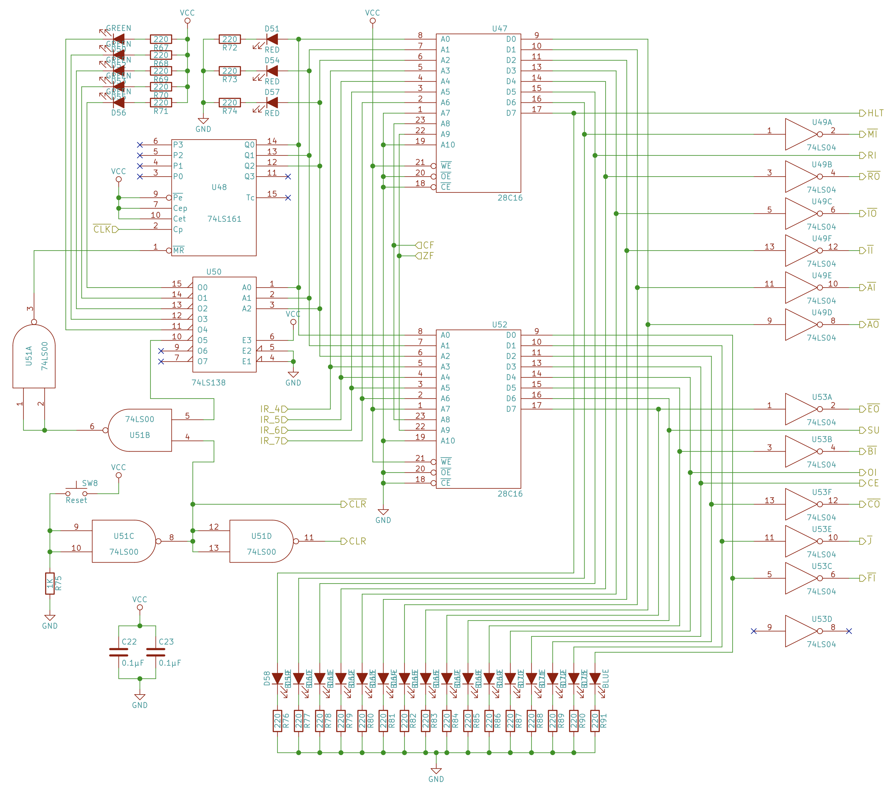
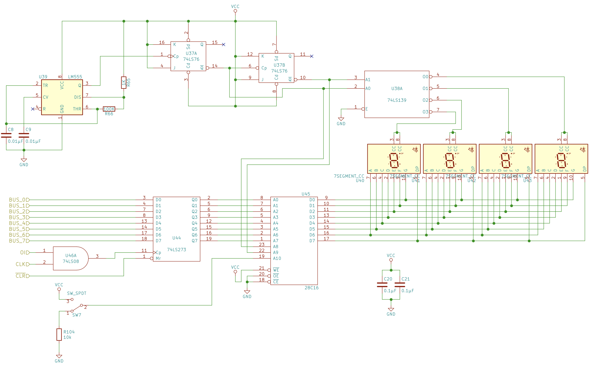

case 03 · Personal · 2024 – 2025
8-bit breadboard computer
A Turing-complete 8-bit CPU wired up from discrete logic chips on breadboards — ALU, registers, RAM, clock, control unit. Custom assembly language for programming it.

What it is
A working 8-bit computer built entirely from 7400-series logic and a few 74181-style ALU chips on breadboards — no microcontroller, no FPGA, no shortcuts. The CPU has a real ALU, an 8-bit register file, a RAM module, a clock module, and a microcoded control unit that decodes a small instruction set.
What I built
- An ALU capable of add/subtract and bitwise ops on 8-bit operands.
- An 8-bit register file built from D-flip-flops with tristate outputs onto the shared bus.
- A RAM module with address-latched reads/writes.
- A clock module with adjustable frequency and single-step debugging.
- A control unit that drives the right enable/load lines for each instruction in the ISA.




The instruction set
I designed a small custom ISA tailored to the hardware — load, store, add, sub, jump, conditional branch, halt — and wrote a hand-assembler so programs could be written in mnemonics and burned into the RAM. Turing-completeness comes from the combination of conditional branching, memory writes, and unbounded program length.


(opcode, step) into the bitmap of enable/load lines that drive each micro-op. Schematic from eater.net.Why do it
Software engineers usually treat the CPU as a black box. Building one from gates makes everything below the C abstraction concrete: what an instruction is, what a register is, how a clock advances state. Every higher-level decision later — pipelines, cache coherence, memory ordering — makes sense once you've seen the gates underneath.

- Word size
- 8-bit
- Logic
- Discrete 7400-series chips
- Memory
- RAM module + microcoded control ROM
- Programmability
- Custom ISA + hand-assembler